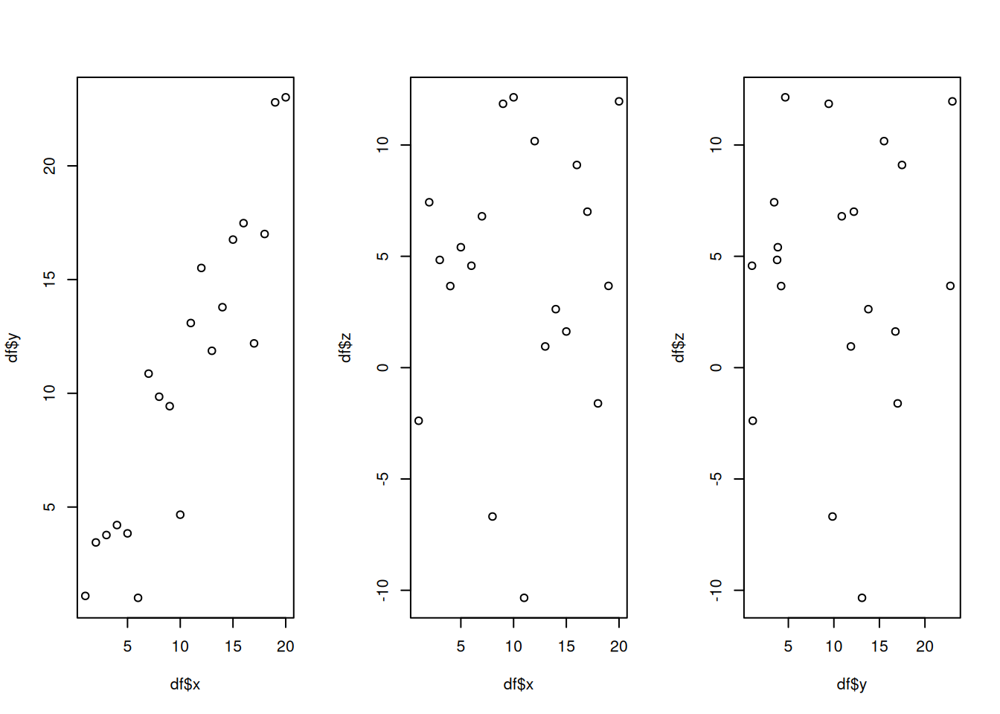
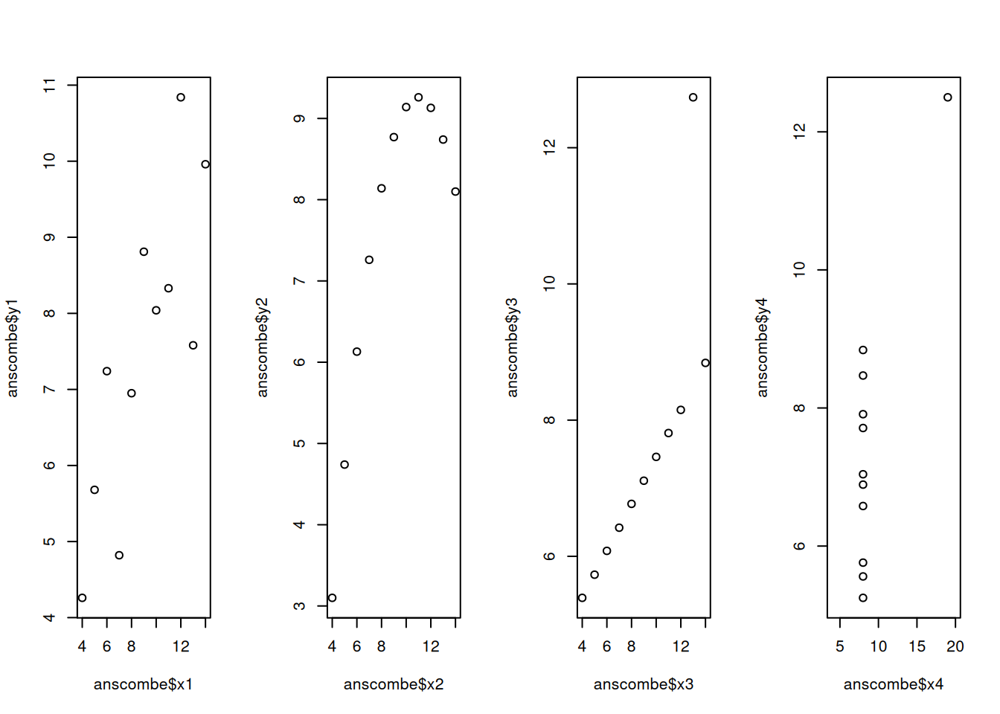
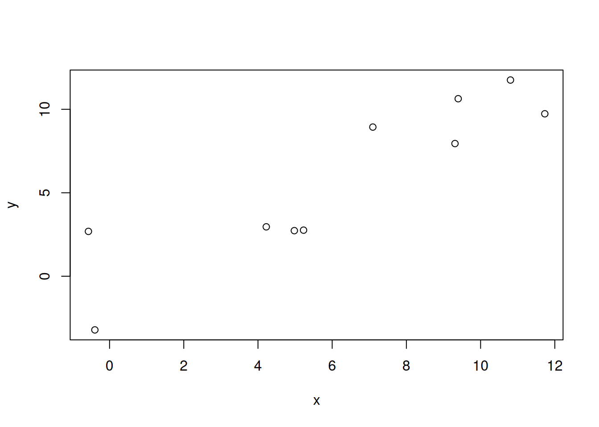
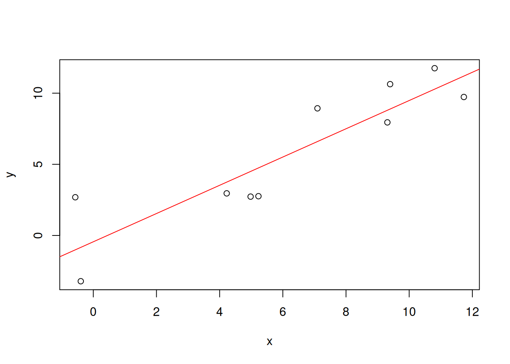
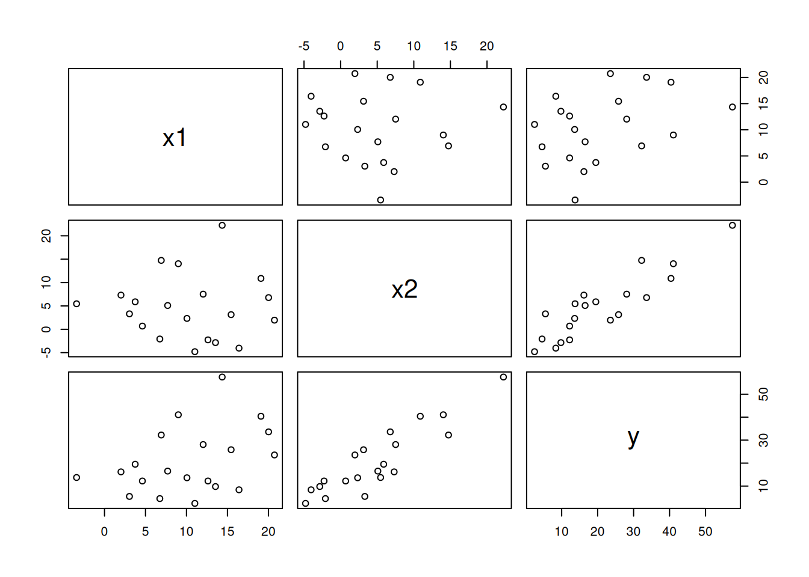
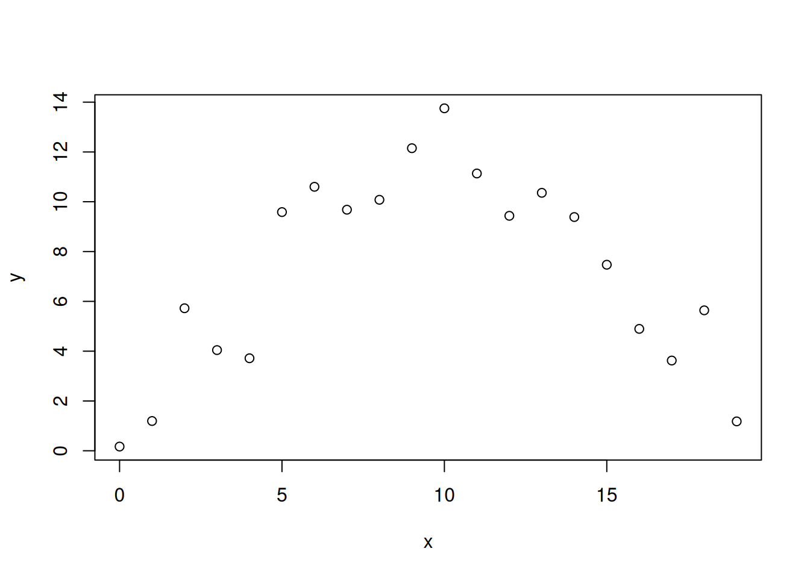
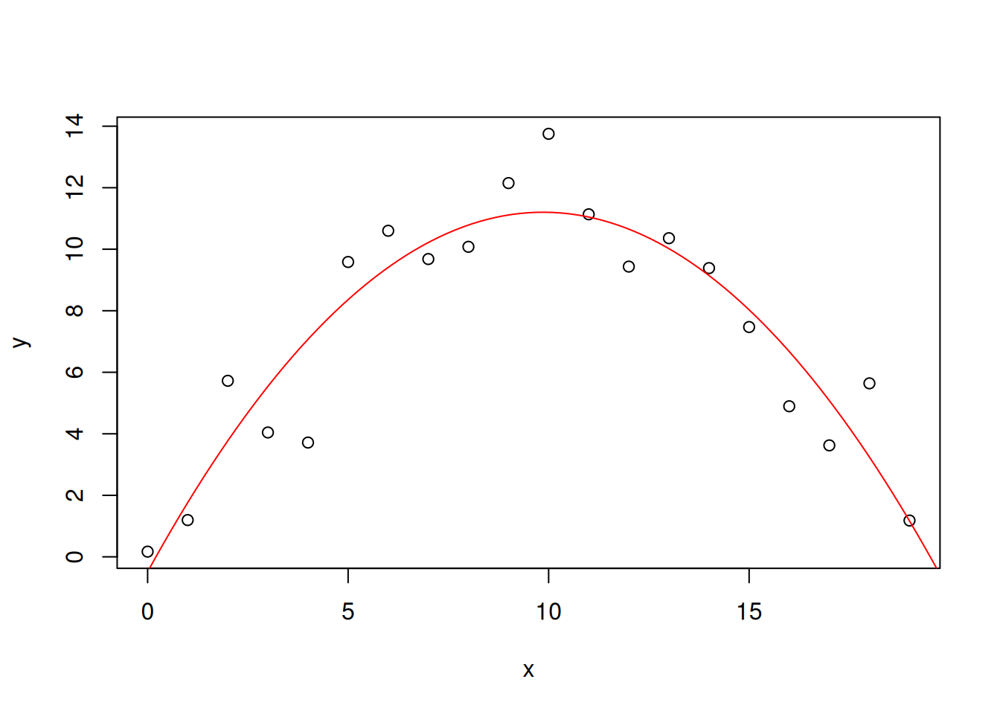

set.seed(6556)
x <- 1:20
y <- x + rnorm(20, sd=3) # y is correlated with x
z <- sample(1:20,20)/2 + rnorm(20, sd=5)
df <- data.frame(x,y,z)12 Correlations and linear regression
Correlation
We say that two variables are correlated when a change in one is associated with a change in the other.
Generate some synthetic data with random noise.
options(repr.plot.width=8, repr.plot.height=3)
par(mfrow=c(1,3))
plot(df$x, df$y)
plot(df$x, df$z)
plot(df$y, df$z)
It appears that x and y are correlated positively, while z in not correlated with the rest.
Let’s check this intuition by calculating the Pearson correlation coefficient.
- values between -1 and 1.
- 1 = perfect positive correlation
- 0 = no correlation.
cor(df, method="pearson") x y z
x 1.0000000 0.91448499 0.11100764
y 0.9144850 1.00000000 0.04973288
z 0.1110076 0.04973288 1.00000000The correlation coefficient between x and y is close to 1, and that between z and the others is small.
However, these results might be due to luck, resulting from the finite number of data we got.
The correlation test gives us a confidence interval about this result.
cor.test(df$x, df$y, method="pearson")
Pearson's product-moment correlation
data: df$x and df$y
t = 9.5888, df = 18, p-value = 1.697e-08
alternative hypothesis: true correlation is not equal to 0
95 percent confidence interval:
0.7927889 0.9660614
sample estimates:
cor
0.914485 cor.test(df$x, df$z, method="pearson")
Pearson's product-moment correlation
data: df$x and df$z
t = 0.47389, df = 18, p-value = 0.6413
alternative hypothesis: true correlation is not equal to 0
95 percent confidence interval:
-0.3486394 0.5276105
sample estimates:
cor
0.1110076 Let’s apply this to a real data set, the height and weight data for men and women which we have used before.
url <- "01_heights_weights_genders.csv"
heights_weights_gender <- read.table(url, header=T, sep=",")Warning in file(file, "rt"): cannot open file '01_heights_weights_genders.csv':
No such file or directoryError in file(file, "rt"): cannot open the connectionmen <- heights_weights_gender$Gender == "Male"Error: object 'heights_weights_gender' not foundmen_heights <- heights_weights_gender[["Height"]][men]Error: object 'heights_weights_gender' not foundmen_weights <- heights_weights_gender[["Weight"]][men]Error: object 'heights_weights_gender' not foundwomen <- heights_weights_gender$Gender == "Female"Error: object 'heights_weights_gender' not foundwomen_heights <- heights_weights_gender[["Height"]][women]Error: object 'heights_weights_gender' not foundwomen_weights <- heights_weights_gender[["Weight"]][women]Error: object 'heights_weights_gender' not foundplot(men_heights, men_weights)Error: object 'men_heights' not foundcor.test(men_heights,men_weights)Error: object 'men_heights' not foundcor.test(women_heights,women_weights)Error: object 'women_heights' not foundCorrelation does not always mean causation
If A and B are correlated, this might mean there is a causal link between them * A causes B, e.g. rain and crop growth. * A and B influence each other; e.g., rain causes tree growth, and large forests cause rain.
However, correlation can also exist without causation.
Both A and B are may be influenced by another factor

Pure luck, no causation.
 (Source)
(Source)
The Anscombe Quartet
Correlation is a summary statistic. It can hide important features of data.
A famous example is the Anscombe data set, which illustrates that very different data can lead to the same correlation coefficient.
anscombe x1 x2 x3 x4 y1 y2 y3 y4
1 10 10 10 8 8.04 9.14 7.46 6.58
2 8 8 8 8 6.95 8.14 6.77 5.76
3 13 13 13 8 7.58 8.74 12.74 7.71
4 9 9 9 8 8.81 8.77 7.11 8.84
5 11 11 11 8 8.33 9.26 7.81 8.47
6 14 14 14 8 9.96 8.10 8.84 7.04
7 6 6 6 8 7.24 6.13 6.08 5.25
8 4 4 4 19 4.26 3.10 5.39 12.50
9 12 12 12 8 10.84 9.13 8.15 5.56
10 7 7 7 8 4.82 7.26 6.42 7.91
11 5 5 5 8 5.68 4.74 5.73 6.89options(repr.plot.width=10, repr.plot.height=3)
par(mfrow = c(1,4))
plot(anscombe$x1, anscombe$y1)
plot(anscombe$x2, anscombe$y2)
plot(anscombe$x3, anscombe$y3)
plot(anscombe$x4, anscombe$y4,xlim=c(4,20))
Despite fundamental differences, the correlation coefficient for each pair of variables is the same.
cor(anscombe$x1, anscombe$y1)[1] 0.8164205cor(anscombe$x2, anscombe$y2)[1] 0.8162365cor(anscombe$x3, anscombe$y3)[1] 0.8162867cor(anscombe$x4, anscombe$y4)[1] 0.8165214Linear regression
When we discover a correlation between two variables \(x\) and \(y\), we may want to find out a formula for the relation between them. That way, we can predict the outcome of unobserved input values.
If we assume a linear relationship \(y=ax+b\). Then, given the observations \((x_1,y_1),\ldots,(x_n,y_n)\), the statistical procedure to determine the coefficients \(a\) and \(b\) is called linear regression.
Once we have some estimates \(\hat{a}\) and \(\hat{b}\) for the parameters, when we get a new input value \(x\), we can predict the outcome as \(y=\hat{a}x + \hat{b}\).
Let’s create a synthetic data set again.
set.seed(1235)
x <- 1:10 + rnorm(10,sd=2)
y <- x + rnorm(10, sd=3) # y is correlated with x
df <- data.frame(x,y)
df x y
1 -0.3959759 -3.217074
2 -0.5697077 2.685184
3 4.9799180 2.729447
4 4.2235517 2.958473
5 5.2284153 2.758888
6 9.3963930 10.634494
7 7.0956912 8.935584
8 9.3097248 7.947907
9 11.7305673 9.731882
10 10.8051459 11.754786options(repr.plot.width=5, repr.plot.height=4)
plot(x,y)
Our purpose is to draw a line such that the distances between given points and the line are minimized. R provides a function lm() (for “linear model”) that performs this task.
linmodel <- lm(y~x, data=df)
linmodel
Call:
lm(formula = y ~ x, data = df)
Coefficients:
(Intercept) x
-0.4448 0.9929 We see a nonzero intercept, even though we expect zero. Is this a significant result?
summary(linmodel)
Call:
lm(formula = y ~ x, data = df)
Residuals:
Min 1Q Median 3Q Max
-2.3791 -1.6957 -0.8209 1.6796 3.6956
Coefficients:
Estimate Std. Error t value Pr(>|t|)
(Intercept) -0.4448 1.2884 -0.345 0.738831
x 0.9929 0.1737 5.716 0.000446 ***
---
Signif. codes: 0 '***' 0.001 '**' 0.01 '*' 0.05 '.' 0.1 ' ' 1
Residual standard error: 2.253 on 8 degrees of freedom
Multiple R-squared: 0.8033, Adjusted R-squared: 0.7787
F-statistic: 32.67 on 1 and 8 DF, p-value: 0.000446confint(linmodel) 2.5 % 97.5 %
(Intercept) -3.4158320 2.526273
x 0.5923686 1.393511The resulting line can be plotted with the abline() function.
plot(x,y)
abline(linmodel, col="red")
Let’s make a prediction for \(x=25,26,\ldots,30\).
newx <- 25:30
predict.lm(linmodel, data.frame(x=newx)) 1 2 3 4 5 6
24.37871 25.37165 26.36459 27.35753 28.35047 29.34341 Linear regression of height and weight data
df <- data.frame(men_heights,men_weights,women_heights,women_weights)Error: object 'men_heights' not foundhead(df) x y
1 -0.3959759 -3.217074
2 -0.5697077 2.685184
3 4.9799180 2.729447
4 4.2235517 2.958473
5 5.2284153 2.758888
6 9.3963930 10.634494men_hw_model <- lm("men_weights ~ men_heights", data=df)Error in eval(predvars, data, env): object 'men_weights' not foundwomen_hw_model <- lm("women_weights ~ women_heights", data=df)Error in eval(predvars, data, env): object 'women_weights' not foundmen_hw_modelError: object 'men_hw_model' not foundplot(men_heights,men_weights)Error: object 'men_heights' not foundabline(men_hw_model,col="red")Error: object 'men_hw_model' not foundwomen_hw_modelError: object 'women_hw_model' not foundplot(women_heights,women_weights)Error: object 'women_heights' not foundabline(women_hw_model,col="red")Error: object 'women_hw_model' not foundLinear regression with multiple variables
Our linear model can involve two independent variables: \[y = a_0 + a_1x_1 + a_2 x_2\]
# generate synthetic data
set.seed(1234)
x1 <- sample(1:20,20) + rnorm(20,sd=2)
x2 <- sample(1:20,20)/2 + rnorm(20, sd=5)
y <- 0 + 1*x1 + 2*x2 + rnorm(10, sd=3)
df <- data.frame(x1,x2,y)
df x1 x2 y
1 12.625346 -2.2599294 12.208969
2 3.745128 5.8808594 19.495541
3 12.036633 7.5157502 28.077552
4 16.410487 -4.0301563 8.370853
5 7.705962 5.0896204 16.518797
6 20.736362 1.9555519 23.547894
7 6.751271 -2.0748100 4.546511
8 4.620524 0.6884524 12.208242
9 2.010014 7.3152791 16.180377
10 6.924739 14.7390874 32.230811
11 15.447952 3.1332329 25.817899
12 9.006522 14.0295481 41.054313
13 11.022790 -4.7890427 2.454123
14 20.019720 6.7829423 33.606283
15 14.356543 22.2449554 57.480047
16 10.059126 2.3261981 13.611950
17 13.540943 -2.8481679 9.789467
18 -3.408696 5.4619762 13.726069
19 19.086346 10.8854222 40.396995
20 3.042854 3.3069613 5.484674plot(df)
linmodel2 <- lm(y~x1+x2, data=df)
linmodel2
Call:
lm(formula = y ~ x1 + x2, data = df)
Coefficients:
(Intercept) x1 x2
2.7540 0.8876 1.8784 confint(linmodel2) 2.5 % 97.5 %
(Intercept) -0.1173064 5.625245
x1 0.6656861 1.109491
x2 1.6702903 2.086563Linear regression with polynomials
Assuming that \(y=a_0 + a_1x + a_2x^2 + a_3x^3+...\)
Consider the following data:
set.seed(8764)
x <- 0:19
y <- -0.1*x^2 + 2*x + 1 + rnorm(20, sd=2)
plot(x,y)
This model is obviously not linear in \(x\). However, we can still use linear regression here.
Create new variables: \(x_1 \equiv x\) and \(x_2 \equiv x^2\).
Then we can set up a linear model with two independent variables as before.
x1 <- x
x2 <- x^2
quadmodel <- lm(y~x1+x2, data=data.frame(x1,x2,y))
quadmodel
Call:
lm(formula = y ~ x1 + x2, data = data.frame(x1, x2, y))
Coefficients:
(Intercept) x1 x2
-0.4860 2.3705 -0.1202 The estimated model is \(\hat{y} = -0.1202x^2 + 2.3705x-0.4860\), while the truth was $y=-0.1x^2 + 2x -1 $.
We cannot plot the fitted curve directly with abline(). Instead, we need to extract the model coefficients and set up a predictions vector with it.
quadmodel$coefficients(Intercept) x1 x2
-0.4859914 2.3704527 -0.1201814 a <- quadmodel$coefficients["x1"]
b <- quadmodel$coefficients["x2"]
c <- quadmodel$coefficients["(Intercept)"]
c(a,b,c) x1 x2 (Intercept)
2.3704527 -0.1201814 -0.4859914 xp <- seq(0,20,length.out = 100)
yp <- a*xp + b*xp^2 + c
plot(x,y)
lines(xp,yp, col="red")
summary(quadmodel)
Call:
lm(formula = y ~ x1 + x2, data = data.frame(x1, x2, y))
Residuals:
Min 1Q Median 3Q Max
-3.3577 -0.8349 0.0507 1.0750 2.5515
Coefficients:
Estimate Std. Error t value Pr(>|t|)
(Intercept) -0.48599 0.96133 -0.506 0.62
x1 2.37045 0.23452 10.108 1.32e-08 ***
x2 -0.12018 0.01192 -10.086 1.36e-08 ***
---
Signif. codes: 0 '***' 0.001 '**' 0.01 '*' 0.05 '.' 0.1 ' ' 1
Residual standard error: 1.579 on 17 degrees of freedom
Multiple R-squared: 0.8592, Adjusted R-squared: 0.8427
F-statistic: 51.88 on 2 and 17 DF, p-value: 5.789e-08confint(quadmodel) 2.5 % 97.5 %
(Intercept) -2.5142103 1.54222740
x1 1.8756591 2.86524640
x2 -0.1453202 -0.09504259